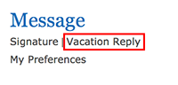
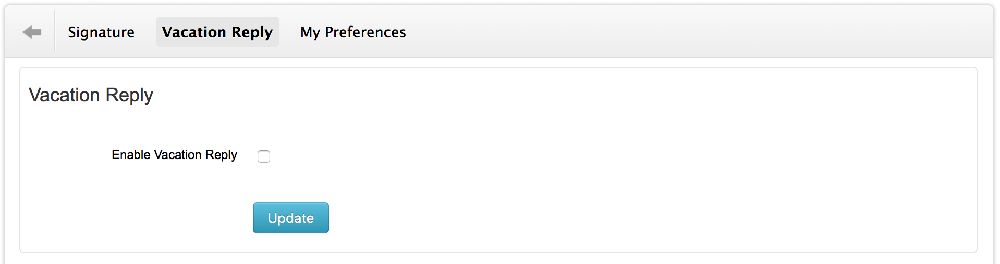
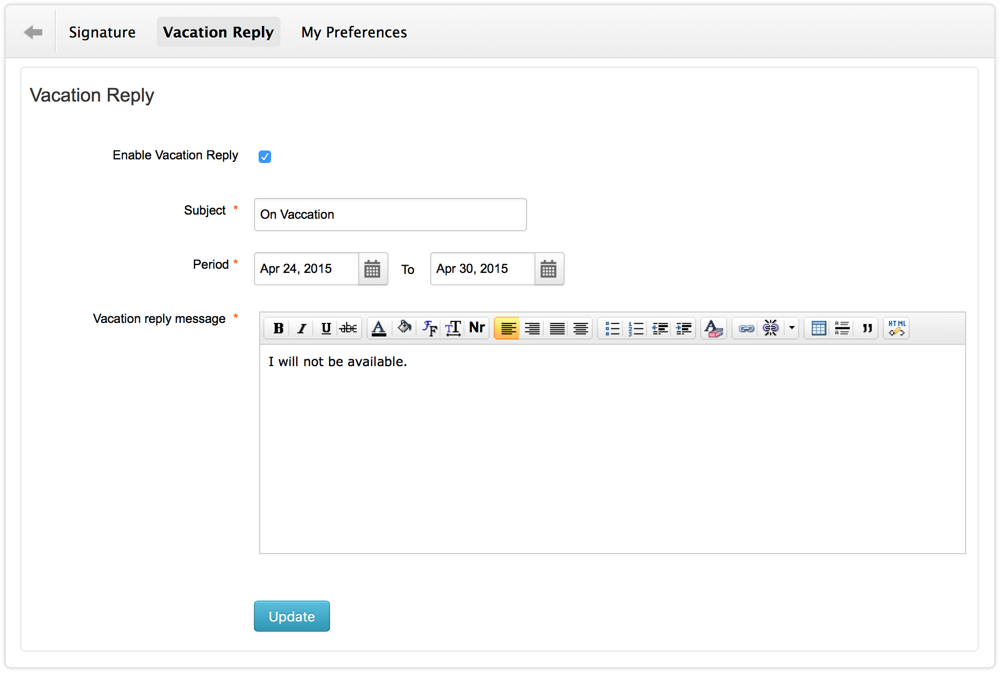

Vacation Reply
Provider can compose and save an automated vacation reply
- Click on Settings > Message > Vacation Reply

- Click on the check box to enable vacation reply

- Enter the required details

- Click on "Update" button to save vacation reply